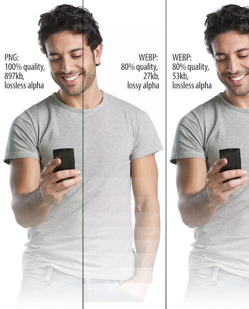

WebP — это формат файла, разработанный компанией Google в 2010 году. Его особенностью является продвинутый алгоритм сжатия, позволяющий сократить размер картинки без видимых потерь в качестве.
В среднем вес картинок сокращается на 25–35%, что позволяет вебмастерам размещать на сайтах больше изображений, не тратя впустую драгоценное пространство на жестком диске арендованного VDS.
Естественно, основное преимущество — это размер. Сокращение размера положительно влияет сразу на четыре аспекта работы в интернете:
WebP использует новый алгоритм сжатия, поэтому искажение (т.е. деформация и ухудшение качества) выглядят иначе относительно других типов файлов. WebP оставляет четкие края фотографии, но при этом ухудшается детализация и текстура, что неизбежно при сжатии с потерями. В то время как сопоставимый JPEG-файл показывает дрожание на сплошных участках изображения, WEBP может похвастаться гладкими переходами даже на самых низких настройках качества.
Недостаток этого в том, что лица людей могут выглядеть пластиковыми или постеризированными при низкой настройке качества.
Разница в качестве между JPEG и WebP.
Разница в качестве между JPEG и WebP при приближении.

Есть еще пара особенностей формата WebP. Настройки сжатия не повторяют в точности таковые в JPEG. Не стоит ожидать, что 50%-качество JPEG будет соответствовать 50%-качеству WebP. В случае в WebP качество падает довольно стремительно, так что начинать лучше с наибольших значений и постепенно их уменьшать. Другой плюс в пользу WebP — способность добавлять маску альфа-канала, прямо как в PNG. В отличии от конкурирующего формата, изображение формата WebP вы можете сжать до одной десятой размера изображения в формате PNG. Это действительно то, чем выделяется WebP.
Настройки качества для альфа-канала применяются и к самому изображению. Например, 50%-качество изображений будет иметь 50%-качество альфа-канала. В нашем тестировании, мы ожидали искажения края маски, однако были также заметные изменения всего изображения. Конечно, это вариант для дальнейшего уменьшения размера, но тогда стоит очень тщательно следить за качеством изображения.
Также, обратите внимание на нежелательные полосы в альфа-канале.
Поддержка данного формата среди браузеров и веб-приложений постепенно растет. Сейчас с WebP не возникает проблем ни в Google Chrome, ни даже в Safari. Но остались сайты и программы, которые все еще не знакомы с этим расширением картинок. Поддержка в браузере Apple появилась не так давно, а в Internet Explorer не появится никогда.
Как я уже заметил выше, проблема не только в браузерах, но и в других программных решениях. К примеру, в WordPress нет нативной поддержки WebP, а это, между прочим, популярнейшая CMS в мире. И таких ресурсов все еще много.
А еще WebP-файлы зачастую нечем открывать на компьютере. Поэтому некоторые пользователи Windows и Linux негодуют, когда пытаются скачать картинку через Google Chrome, а получают файл с невнятным расширением, который нельзя открыть.